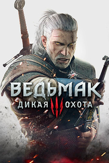
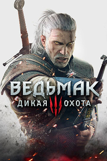
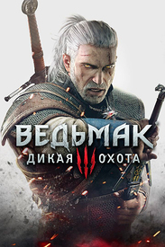

Самые популярные видеоигры
Список самых популярных видеоигр

Tetris
«Тетрис» представляет собой головоломку, построенную на использовании геометрических фигур «тетрамино» — разновидности полимино, состоящих из четырёх квадратов. Полимино в том или ином виде использовались в настольных играх и головоломках задолго до создания «Тетриса». Идею «Тетриса» Пажитнову подсказала игра в пентамино.
Первоначальная версия игры была написана Пажитновым на языке программирования Паскаль для компьютера «Электроника-60». Коммерческая версия игры — первая из многих последующих — была выпущена американской компанией Spectrum HoloByte в 1987 году. В последующие годы «Тетрис» во множестве различных версий был портирован на великое множество устройств, включая всевозможные компьютеры и игровые консоли, а также такие устройства, как графические калькуляторы, мобильные телефоны, медиаплееры, карманные персональные компьютеры и — в качестве «пасхального яйца» — устройства, вовсе не предназначенные для воспроизведения медиаконтента, такие, как паяльник.
Особую известность в США, Европе и Японии приобрела версия для портативной консоли GameBoy, выпускавшаяся японской компанией Nintendo — игра поставлялась с каждой консолью; в России и Китае большой популярностью пользовались более примитивные устройства Brick Game со встроенной игрой. Лишь для одной GameBoy было продано 35 миллионов копий; в 2014 году Хенк Роджерс, глава The Tetris Company, утверждал, что количество платных загрузок игры для мобильных телефонов превысило 425 миллионов.
Minecraft
Minecraft — компьютерная инди-игра в жанре песочницы, созданная шведским программистом Маркусом Перссоном и выпущенная его студией Mojang AB. В 2009 году Перссон опубликовал начальную версию игры; в конце 2011 года была выпущена стабильная версия для компьютеров Windows, Linux и macOS с распространением через официальный сайт.
Minecraft является одной из самых продаваемых игр в истории: по состоянию на 2023 год было продано более 300 миллионов копий на всех платформах, а количество игроков, запускавших игру хотя бы раз в месяц, составило 172 миллиона.
Minecraft оказала огромное влияние на индустрию компьютерных игр и породила множество клонов. На текущий момент она представляет собой целую франшизу, включающую в себя, помимо основной игры, такие игры как Minecraft: Story Mode, Minecraft Earth, Minecraft Dungeons и Minecraft Legends.
PUBG: Battlegrounds
PUBG: Battlegrounds — многопользовательская онлайн-игра в жанре королевской битвы, разрабатываемая и издаваемая студией PUBG Corporation. Игра основана на предыдущих модификациях для других игр, созданных Бренданом Грином под псевдонимом «PlayerUnknown», концепция которых была вдохновлена японским фильмом «Королевская битва» (2000). В итоге это привело к созданию самостоятельной игры, где Грин выступил в качестве ведущего геймдизайнера.
PUBG: Battlegrounds была выпущена в Steam по программе раннего доступа 23 марта 2017 года для операционной системы Windows. В течение первых семи месяцев после выхода было продано более 13 млн копий игры, а пиковое количество игроков достигло более 2 млн чел. к концу года, что сделало её одной из самых популярных игр в Steam. 31 октября продажи PUBG превысили 18 млн копий. Полная версия игры была выпущена 21 декабря 2017 года. Выход для Xbox One под издательством Microsoft Studios состоялся 12 декабря по программе раннего доступа, 4 сентября 2018 года состоялся официальный релиз.